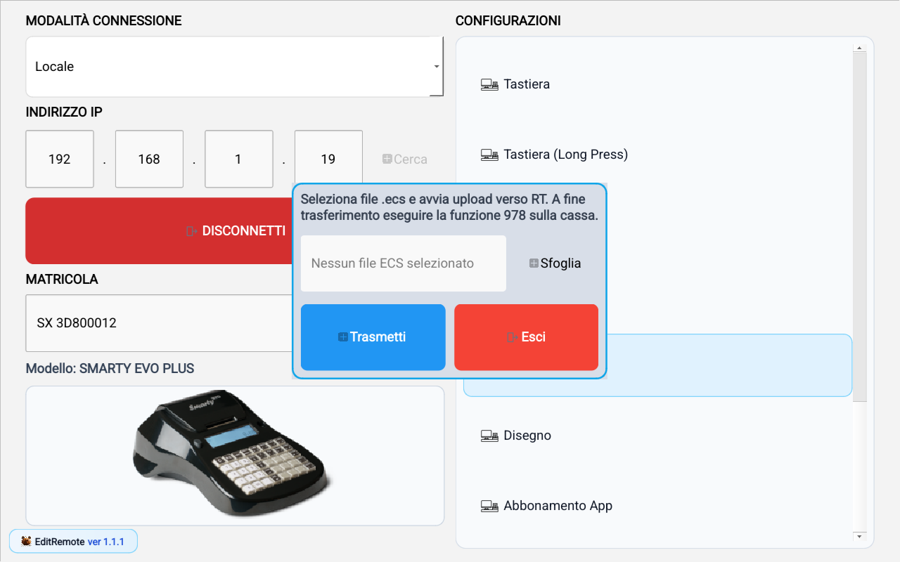

Aggiornamento
Guida operativa
Questa sezione aggiorna il software della cassa con un pacchetto firmato .ecs. Il percorso locale e quello remoto sono distinti.
Aggiornamento in Remoto
- Accorda l'intervento con l'esercente, che deve rimanere davanti alla cassa. Verifica i prerequisiti fiscali previsti, la gestione della lotteria e l'alimentazione. L'aggiornamento non esegue automaticamente una chiusura fiscale.
- Collegati in Remoto e apri Aggiornamento.
- Leggi la revisione installata, comunicata dalla cassa, e l'esito dei controlli preliminari RT. Se il controllo non è disponibile o aggiornato, AGGIORNA resta disabilitato.
- Compila Codice Fiscale Tecnico (16 caratteri, maiuscolo, struttura italiana anche con omocodia) e Partita Iva Laboratorio (11 cifre). I controlli regex verificano il formato, non l'identità o l'abilitazione del tecnico.
- Seleziona il file dalla combobox: sono proposti solo gli ECS del modello collegato con revisione pari o superiore a quella installata, pubblicati nel catalogo privato. È possibile reinstallare la stessa revisione; il downgrade non è consentito. La revisione viene letta dal pacchetto ECS, non dedotta dal nome file o dal tag della Release. Bozze e prerelease non sono elencate. Nessun firmware disponibile e errore di accesso al catalogo sono condizioni distinte.
- Canale produzione/test: un nome con P immediatamente prima di .ECS identifica produzione (esempio SMEVO26P.ECS); senza la P identifica test (SMEVO26.ECS). Una cassa di produzione (firmware SW_PROD) non vede e non può ricevere da questo percorso file test. Una cassa test (senza SW_PROD) può vedere entrambi, sempre rispettando il divieto di downgrade. Se il RT non comunica il proprio canale, l'aggiornamento resta bloccato.
- Versione visualizzata: per SMARTY EVO, SMARTY EVO+ e JOLLY la revisione numerica 26 viene mostrata come 2.6 (27 come 2.7). È solo una convenzione di visualizzazione: confronti e divieto di downgrade usano sempre il valore intero dell'header ECS. Il nome del file non viene modificato.
- Premi AGGIORNA e leggi la conferma: dopo la ricezione del comando, la cassa terminerà il collegamento con EditRemote e procederà autonomamente.
- Attendi la presa in carico. Questo messaggio non certifica l'installazione. Se l'esito non è verificabile, non ripetere l'invio alla cieca: contatta l'esercente.
- L'esercente conferma sulla cassa, attende il download e la verifica del pacchetto, quindi segue la conferma prevista dal RT prima dell'installazione. Il firmware mantiene i controlli di modello, boot, revisione e firma.
- L'esercente comunica al tecnico l'esito effettivo e la revisione dopo il riavvio, oppure l'errore o l'annullamento visualizzato/stampato. EditRemote non segue l'avanzamento dopo il distacco; una nuova sessione richiede una nuova connessione.
Quando si abilita AGGIORNA: la cassa deve superare gli stessi controlli preliminari dell'aggiornamento firmato locale, senza la richiesta di autorizzazione fiscale e senza la presenza di una chiavetta USB. Il RT verifica alimentazione esterna sui modelli ambulanti, boot almeno 0x30, totali e contatori fiscali azzerati e assenza di scontrini lotteria da gestire. Restano le eccezioni di compilazione previste dal firmware (FOR_DEVELOPMENT per il boot, FORCE_UPGRADE per i controlli fiscali/lotteria). Il motivo di blocco viene mostrato nella vista: risolvilo sulla cassa e attendi il prossimo contatto. Le verifiche scadono dopo 45 secondi e sono rilette automaticamente; servizio e RT le ripetono prima di accettare il comando.
Il servizio cloud accede al repository privato e rende disponibile alla cassa un download temporaneo: non occorrono credenziali GitHub nell'app o nel RT. I dati tecnico vengono registrati per l'intervento firmware attraverso il percorso previsto dal RT.
Collaudo reale: preliminari superati, ma nessun firmware selezionabile
Il 18 ottobre 2026, su SMARTY EVO REV. 2.7 collegata in Remoto, il RT ha comunicato i controlli preliminari superati. Il catalogo non ha proposto pacchetti compatibili e AGGIORNA era disabilitato, verificato anche nello stato accessibile del pulsante. Il solo file pubblicato, chiamato SMEVO27.ECS, conteneva ancora la revisione 26 nell'header firmato: il nome non lo rende una versione 2.7. Il test si è fermato prima dell'invio: nessun download/installazione firmware avviato sulla cassa.
Nella registrazione la dicitura “Nessun firmware pubblicato per questo modello” appartiene alla build provata: indica un elenco compatibile vuoto, non necessariamente un repository senza Release. Il testo è stato precisato nei sorgenti successivi.
Apri la schermata del controllo preliminare. Schermata e video sono ritagliati sulla vista OTA, senza la matricola mostrata nella schermata sottostante.

Collaudo reale: comando preso in carico e distacco remoto
Con un nuovo ECS avente effettivamente revisione 27, pubblicato come asset della Release smarty-evo-27-test, la cassa 2.7 ha accettato la reinstallazione della stessa revisione. Sono stati usati dati tecnico fittizi, su esplicita autorizzazione per la cassa di test. EditRemote ha mostrato la conferma, atteso l'ACK e riportato Aggiornamento affidato alla cassa, tornando disconnessa.
Aggiornamento locale con LoadDump
Retest del 18 ottobre, ore 15:29: dopo il caricamento locale della correzione, confermato dall'operatore, il riavvio dopo la conferma si è ripetuto. La correzione aritmetica non ha risolto il blocco osservato.
Aggiornamento diagnostico, ore 17:00: il debugger ha rilevato una violazione dello stack del task principale. Dopo lo spostamento dei buffer temporanei del percorso remoto nel secondo banco RAM esterno, senza aumentare lo stack, l'operatore ha confermato che la riprova ha funzionato. Build e link del firmware Test sono riusciti senza errori o warning. Restano da registrare il margine stack minimo e la verifica separata della revisione installata dopo il riavvio: i video mostrano la presa in carico, non certificano l'installazione completa.
Come usare la pagina in locale
- Apri Aggiornamento dalla lista Configurazioni.
- Premi Sfoglia e seleziona il file .ecs.
- Controlla il percorso mostrato nel campo file.
- Premi Trasmetti per inviare il pacchetto alla cassa.
- A fine invio, esegui la funzione 978 sulla macchina RT.
Significato campi e pulsanti
- File ECS: pacchetto di aggiornamento da trasferire.
- Sfoglia: apre il selettore file per scegliere il pacchetto ECS.
- Trasmetti: avvia il trasferimento chunked del file verso la cassa.
- Esci: chiude il dialog senza invio.
Controlli finali locali
- Verifica conferma di fine trasferimento nell'app.
- Esegui 978 MENU sulla cassa e attendi il completamento lato RT.
- Al riavvio, conferma revisione software attesa.
Schermata Aggiornamento locale
